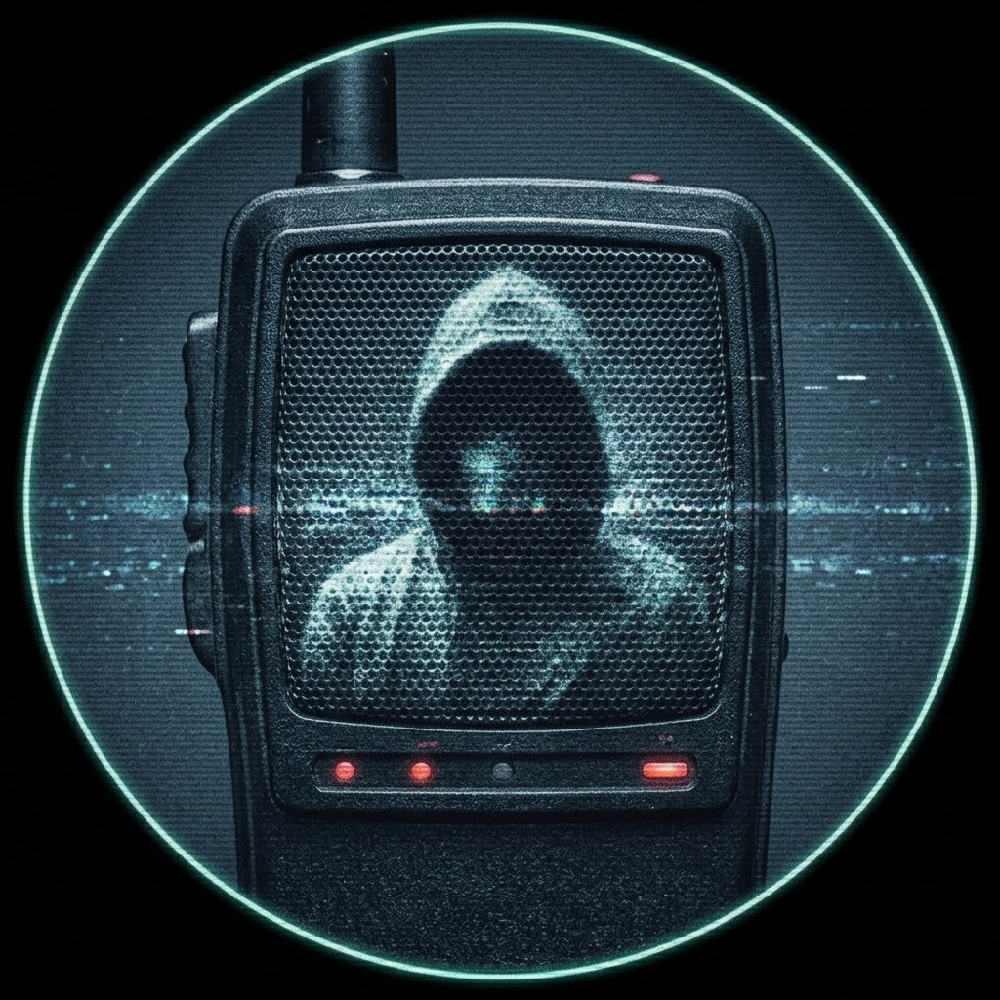

REC
SIĞINAK: BANT KAYITLARI
[ FREKANS: 94.2 MHz — ÇEVRİMDIŞI ]
[ YENİ YAYIN BAŞLAT ]
[ YAYINA DEVAM ET ]
[ SİNYAL AYARLARI ]
[ BANT ARŞİVİ ]
[ KARAKTER DOSYASI ]
> KARAKTER DOSYASI SORGULANIYOR...
[ KAPAT ]
> BANT ARŞİVİ SORGULANIYOR...
[ KASETİ ÇIKAR ]
[ KAPAT ]
REC
00:00:00
GÜN 1
[ AYARLAR ]
SİNYAL KONTROL ÜNİTESİ
✕
ANA SES
100%
MÜZİK
100%
TELSİZ / SFX
100%
[ TAM EKRAN ]
[ KARAKTER DOSYASI ]
SON FREKANS
BANT #001: Ali Kayra
[ GÜÇ ]
[ GÜVEN ]
[ AKIL ]
[ SİNYAL ]
◀
▶
[ SUSTUR // REDDET ]
[ YAYINA AL // ONAYLA ]

Konuşmacı
Kart metni burada görünecek.
Sol Seçim
Sağ Seçim
096.4
MHz
ARIYOR...
[ PWR_CRITICAL ]
Arıza açıklaması burada görünecek.
[ ONAR / RESETLE ] (BASILI TUT)
3 SANİYE BASILI TUT
[ BUSE // KORSAN HAT ]
[ ZİHNİ ODAKLA ]
[ DEVAM ET ]
ZİHİN EŞLEME — DALGAYI KİLİTLE
AYARLANIYOR...
⟲
// OPERATÖR TUTANAĞI //
GÜÇ
—
GÜVEN
—
AKIL
—
SİNYAL
—
⟲
◼ BANT SONU
Yeni Bant Başlat